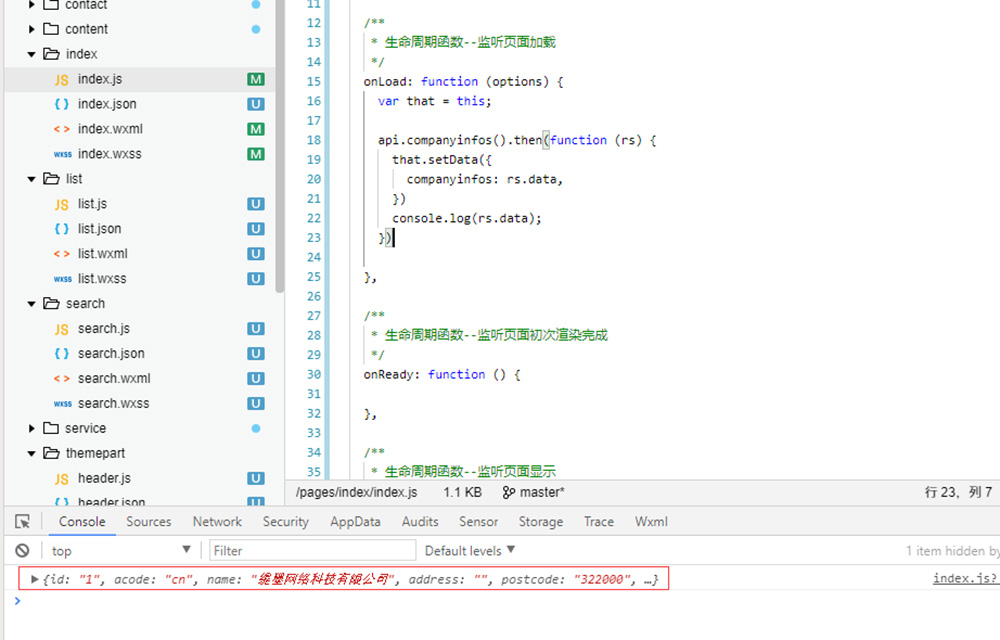
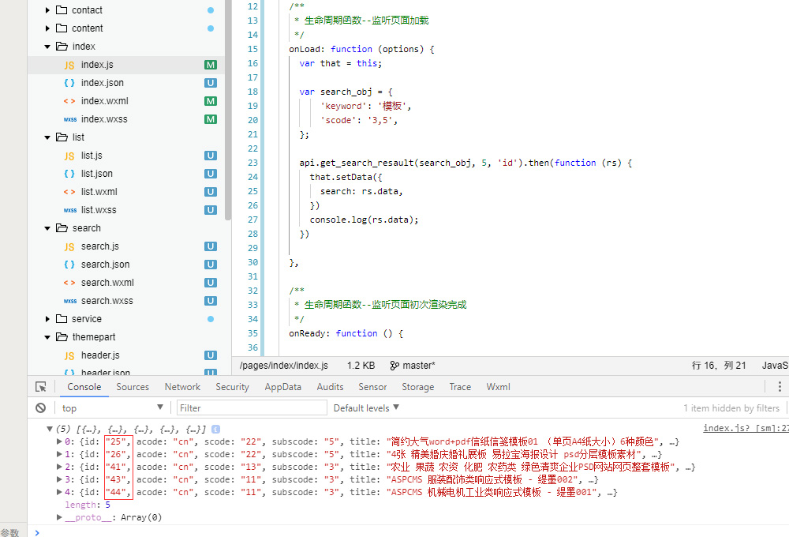

PbootCMS小程序API的封装步骤教程
作者：缇墨网络 时间：2018-10-25 访问量：14465
程序员应该具备的美德是“懒”，能用一行代码搞定的，尽量不用两行。
所以，刚开始研究PbootCMS制作小程序的时候，第一个想法就是封装接口。
文件下载地址：
下面是封装步骤（封装文件在文章最后提供下载，供大家参考）。
1、准备md5加密文件。
因为PbootCMS的签名参数signature是经过双层md5加密的，当然如果后台WebAPI没有开启强制认证的，这一步可以跳过。
2、封装一下API的请求方法。
//声明一个请求函数
function api_request(url, method, parm){
var apiurl = '******'; //域名 + api.php
var appid = '******'; //后台WebAPI中设置的API认证用户
var appsecret = '******'; //后台WebAPI中设置的API认证密钥
var timestamp = Date.parse(new Date());
timestamp = timestamp / 1000; //获取当前时间戳
var signature = md5.hex_md5(md5.hex_md5(appid + appsecret + timestamp)); //构建signature
var data = { //因为搜索、留言和表单需要用到POST方法，要通过data传递参数，所以先声明data对象，方便后面添加
appid: appid,
timestamp: timestamp,
signature: signature,
};
//根据请求方法构建Header
if (method == 'POST') {
//POST方法，设置请求头部
var header = { 'Content-Type': 'application/x-www-form-urlencoded; charset=utf-8' };
//添加POST参数到data
for (var i in parm) {
data[i] = parm[i];
}
} else {
//GET方法，设置请求头部
method = 'GET';
var header = { 'Content-Type': 'application/json' };
}
//通过promise返回数据
var promise = new Promise(function(resolve,reject){
//小程序自带的wx.request请求
wx.request({
method: method,
url: apiurl + url,
header: header,
data: data,
//请求成功
success: function(res){
var api_data = res.data;
if (api_data.code != 1 && api_data.code != 0){
reject({ error: '数据请求失败，请稍后重试', code: 500 });
return;
} else {
resolve(api_data);
}
}
})
})
//返回数据
return promise;
}3、封装API模块
//这里就比较简单了，就是构建api的url，然后传入到api_request这个请求函数，返回数据。
//下面是根据官方文档中的api封装的各个模块，有些没有实际测试检查，可能有手误什么的，大家自行调整即可。
//Api模块
module.exports = {
//获取公司信息
companyinfos: function(){
var url = '/cms/company';
return api_request(url);
},
//获取单个公司信息
companyinfo: function(name){
var url = '/cms/company/name/' + name;
return api_request(url);
},
//获取网站信息
siteinfos: function(){
var url = '/cms/site';
return api_request(url);
},
//获取单个网站信息
siteinfo: function(name){
var url = '/cms/site/name/' + name;
return api_request(name);
},
//获取自定义标签
get_labels: function(){
var url = '/cms/label';
return api_request(url);
},
//获取单个自定义标签
get_label: function(){
var url = '/cms/label/name/' + name;
return api_request(url);
},
//获取幻灯片
get_slide: function(gid,num){
var url = '/cms/slide/gid/' + gid + '/num/' + num;
return api_request(url);
},
//获取友情链接
get_links: function(gid,num){
var url = '/cms/link/gid/' + gid + '/num/' + num;
return api_request(url);
},
//获取栏目列表
get_navs: function(){
var url = '/cms/nav';
return api_request(url);
},
//获取指定栏目列表
get_nav: function(scode){
var url = '/cms/nav/scode/' + scode;
return api_request(url);
},
//获取当前栏目
get_current_cat: function(scode){
var url = '/cms/sort/scode/' + scode;
return api_request(url);
},
//获取内容列表
get_list: function(scode,num,order){
if( ( num != '' ) && !order ){
var url = '/list/' + scode + '/num/' + num;
} else if( !num && ( order != '' ) ){
var url = '/list/' + scode + '/order/' + order;
} else if ( (num != '') && (order != '') ){
var url = '/list/' + scode + '/num/' + num + '/order/' + order;
} else {
var url = '/list/' + scode;
}
return api_request(url);
},
//获取内容列表第*页
get_list_paged: function (scode, paged, num, order) {
if ((num != '') && (order == '')) {
var url = '/list/' + scode + '/num/' + num + '/page/' + paged;
} else if ((num == '') && (order != '')) {
var url = '/list/' + scode + '/order/' + order + '/page/' + paged;
} else if ((num != '') && (order != '')) {
var url = '/list/' + scode + '/num/' + num + '/order/' + order + '/page/' + paged;
} else {
var url = '/list/' + scode + '/page/' + paged;
}
return api_request(url);
},
//获取指定内容
get_content: function(id){
var url = '/content/' + id;
return api_request(url);
},
//获取指定内容多图
get_content_pics: function(id){
var url = '/cms/pics/id/' + id;
return api_request(url);
},
//获取搜索结果
get_search_resault: function(parm,num,order){
if ((num != '') && (order == '')) {
var url = '/cms/search/' + 'num/' + num;
} else if ((num == '') && (order != '')) {
var url = '/cms/search/' + 'oder/' + order;
} else if ((num != '') && (order != '')) {
var url = '/cms/search/num/' + num + '/order/' + order;
} else {
var url = '/cms/search/';
}
return api_request(url, 'POST', parm);
},
//提交留言
add_message: function(parm){
var url = '/cms/addmsg';
return api_request(url, 'POST', parm);
},
//获取留言内容
get_message: function(num){
var url = '/cms/msg/num/' + num;
return api_request(url);
},
//获取留言内容第*页
get_message_paged: function(num,paged){
var url = '/cms/msg/num/' + num + '/page/' + paged;
return api_request(url);
},
//提交表单
add_form: function(fcode,parm){
var url = '/cms/addform/fcode/' + fcode;
return api_request(url, 'POST', parm);
},
//获取表单内容
get_form: function(fcode){
var url = '/cms/form/fcode/' + fcode;
return api_request(url);
},
//获取表单内容第*页
get_form_paged: function(fcode,num,paged){
var url = '/cms/form/fcode/' + fcode + '/num/' + num + '/page/' + paged;
return api_request(url);
},
}4、完成了，就这么简单。
下面说明一下调用的方法：
1、在需要调用数据的js页面引入api文件，例如首页的index.js
const api = require('../../utils/api.js'); //路径根据自己的实际情况调整2、在生命周期函数--监听页面加载函数中使用api模块。
/**
* 生命周期函数--监听页面加载
*/
onLoad: function (options) {
var that = this; //划重点，这句千万不要忘掉了。
//api.模块函数.then...来调用，这里companyinfos()是调用公司信息
api.companyinfos().then(function (rs) {
//通过setData把获取到的数据赋值到页面初始数据的data对象,这样就可以在wxml中使用数据了。
that.setData({
companyinfos: rs.data,
})
//把获取的数据输出到控制台看看，实际使用的时候删除掉下面这行
console.log(rs.data);
})
},3、控制台截图，可以看到公司信息的数据获取成功，接下来就是绑定数据到页面的事情了。

4、POST请求的使用方法。同样在生命周期函数--监听页面加载函数中使用api模块。
//首先声明一个对象，用来存储需要通过POST传递过去的参数。比如搜索的keyword,scode，留言的字段等。
//这里演示的是搜索模块，声明对象，POST搜索的关键词和指定分类。
var search_obj = {
'keyword': '模板',
'scode': '3,5',
};
//get_search_resault需要传入 搜索对象（也就是刚才声明的），返回条数，排序方式。
//这里演示需要获取的是分类3和5中的，关键词是模板的5条信息。
api.get_search_resault(search_obj, 5, 'id').then(function (rs) {
that.setData({
search: rs.data,
})
console.log(rs.data);
})5、看看控制台的截图。

可以看到，已经获取到分类3和分类5中的，关键词是“模板”，并且按照id进行排序的前5条数据了。